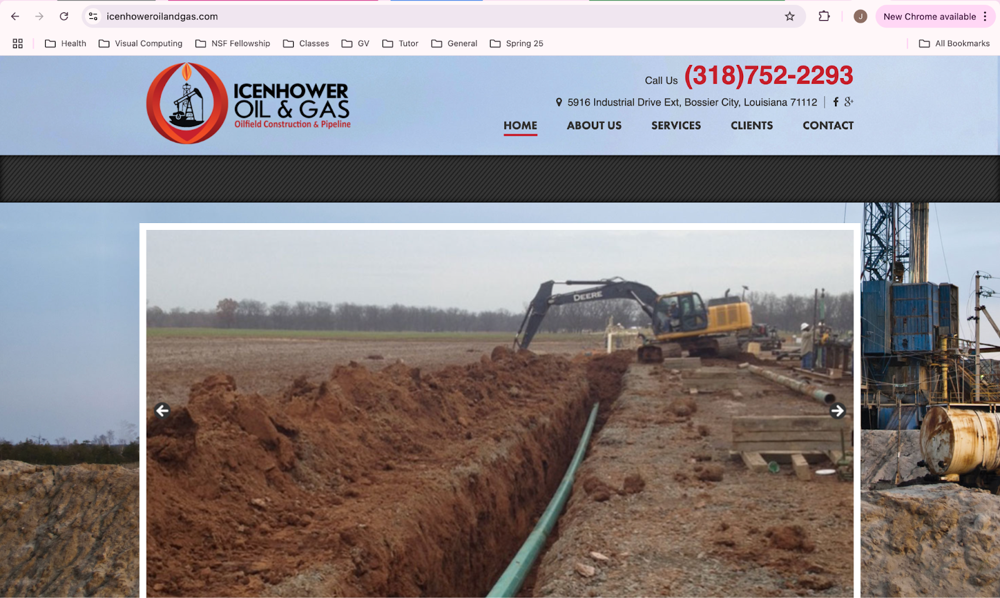

How do you modernize a website without losing its identity? This was the central question I asked when I began redesigning the Icenhower Oil & Gas website. The original site conveyed the company's theme effectively but lacked in usability, visual hierarchy, and accessibility support. As a visitor, it was difficult to quickly identify the company's offerings, and some interactions were unclear or inaccessible to users with assistive technologies.
My goal was to maintain the industrial identity of the brand while modernizing the layout, streamlining the content, and improving responsiveness and accessibility across all screen sizes. This process consisted of first identifying usability and accessibility issues, followed by creating mockups of the new website design in Figma, and lastly, implementing a the new website in HTML and CSS to ensure responsiveness across all different screen sizes.
First, let's assess the original Icenhower website. You can find the full original site here. At a first glance, this website has a clear theme for users visiting the site but at the cost of some accessibility elements. I am interested in helping the website stick to its narrative while making it easier for users to navigate.
| Usability Principle | Problem |
|---|---|
| Efficiency | The current header and navigation menu are straightforward, but the rest of the top part of the page is taken up by a slideshow of photos, which may not be immediately important to users of the site. Implementing a more intuitive ordering and layout with clear headings and subheadings would improve user experience. |
| Learnability | Some of the hyperlinks on the website are not immediately obvious that they are clickable. |
| Memorability | Adding a company mission statement toward the top of the page can more easily set it apart from other oil and gas companies. |
| Accessibility | In terms of accessibility, there are several images missing alternative text, which would be beneficial to include for users using screen readers. Additionally, there are some areas with low contrast between text and background colors, which could be an accessibility issue for users with visual impairments. |
Next, let's create three high-fidelity mockups in Figma to map out our new website design, highlighting what areas of the new website will be responsive to varying screen sizes.
Lastly, let's implement the actual website! The final build of the Icenhower Oil & Gas homepage was developed using HTML and CSS, with Bootstrap providing a responsive grid framework. Visit here to see the site!
This project strengthened my skills in responsive design and accessibility, especially in translating static mockups into interactive layouts that adapt to user contexts. One key challenge was balancing the industrial aesthetic of an oil and gas brand with modern UX expectations. I found that sticking to a minimal palette while still integrating the images from the original site helped keep this balance. This experience reinforced my belief that even small websites serving niche industries deserve thoughtful, accessible, and user-centered design.